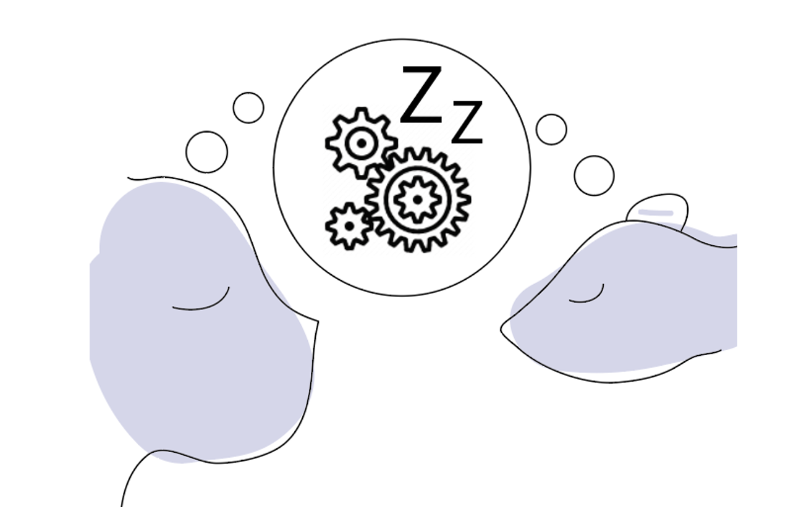
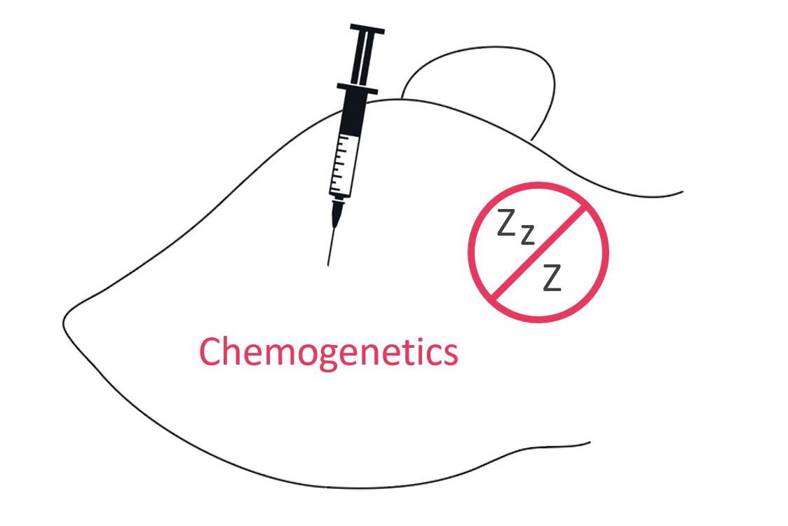
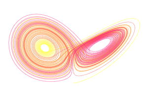
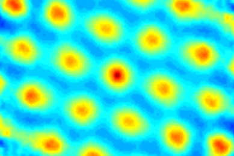
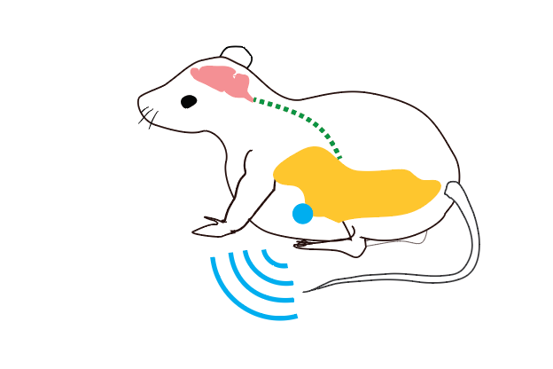
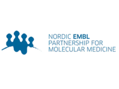
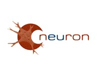

Sleep & Cognitive Development
Decoding immature neural activity from multiple brain areas in freely behaving rodent pups to reveal mechanisms at play during developmental sleep.
Norwegian Centre for Molecular Biosciences and Medicine, Oslo, Norway
We combine high density electrophysiology, optogenetics and computational analyses to investigate how sleep contributes to healthy cognitive development.
If you are interested in joining us, please check our hiring page.
The lab is focused on the following research lines:

Decoding immature neural activity from multiple brain areas in freely behaving rodent pups to reveal mechanisms at play during developmental sleep.

Exploiting recent advance in gene editing, molecular and viral tools to engineer rodent models of developmental sleep deprivation (Chemogenetic, Optogenetic, CRISPR)

Engineering wireless and fully implantable electrophysiological “brain machine interface” to decode and manipulate brain activity in real time in freely-behaving rodents.

Developing analytical pipelines and machine learning algorithms to automatically detect and decode multiunit activity codes and oscillatory events across brain regions.

Revealing sleep and wake neural computations that support learning, updating and consolidation of memory traces, as well as the neural code underlying spatial cognition.

Monitoring the communications between the brain and the adipose tissue during adolescent sleep to better understand how bad sleep habits may lead to the emergence of metabolic disorders

Developing tools and strategies to study autophagy during sleep in an invertebrate (Drosophila) and a rodent (rat) model of sleep deprivation.

Combining targeted sleep disruption with 3D spatial transcriptomics and high-resolution imaging to understand how sleep impacts the maturation of interneurons and glia across postnatal development.

Investigating the impact of childhood adversities on adulthood psychopathology in rodent model using in vivo electrophysiology and behavioral assays.
Stay updated with the latest information on funding, research, lab outings, seminars and recruitments in the lab.

Charlotte and Letizia attended Sleep Europe 2026, with a poster on Nyx, a Master Class and a co-chaired session.

Letizia and Sophia presented our work, and Sophia won the NCMBM Poster Prize at the IMB Science Fair!

Congrats to Malin for winning the Best Academic Poster Award for the summer research projects from UiO:Life Science!

Charlotte, Sophia and Dongkyun presented our work in Umeå, and Sophia won a poster prize!

Welcome to our new Master's student Emily Denise Kellett joining the lab for her thesis project.

Charlotte presented our group's work at Neuro2026 in Kobe and gave invited talks at Tohoku University and RIKEN BDR.
Nyx, our open-source framework for sleep scoring across species, lifespan and modalities, is now out as a preprint!

Charlotte co-organised a networking event on sleep across the tree of life, while Sandra and Paulina presented posters.

Congratulations to Teije on his Master's thesis defense at the University of Groningen!

Charlotte took part in the ESRS meeting to finalise guidelines for sleep recording and analysis in laboratory rodents.

Talks, posters, a People's Choice Award for Letizia, and the prize for Best Coat of Arms!

We are pleased to host Emily and Olga for a summer internship through the UiO:Life Science program.

We were delighted to host Peter Meerlo for this week's NCMBM International Tuesday Seminar.

Charlotte presented our lab's research at Columbia, Albert Einstein, UPenn and McGill.

March is Sleep Awareness Month and our group is marking the event across NCMBM social media channels!

Congratulations to Solveig on her incredible Master's thesis defense at the University of Oslo!

Paulina attended the Gordon Research Conference “Autophagy in Stress, Development and Disease” in California

Congrats to Cantin for being awarded a new Nansenfondet Research Grant!

Welcome to Dongkyun, our new postdoctoral researcher!

Paulina went to visit the Fly Sleep Lab of Sha Liu at VIB, KU Leuven for 3 weeks

Congratulations to Alessandro on his MSCA Fellowship success!

We are excited to share a recent portrait interview with our group leader, Charlotte Boccara, published in Apollon!

Congratulations to Henriette on her Master's thesis defense at NMBU!
Welcome to our new Master's student Teije Bonsema joining the lab for her thesis projects.

Welcome to Sophia Wilhelm, our new postdoctoral researcher!
The lab is generously supported by research grants and fellowships from the following sources